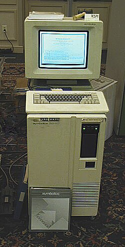
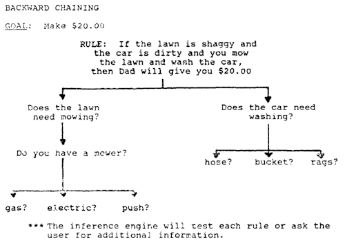

Expert system


In artificial intelligence (AI), an expert system is a computer system emulating the decision-making ability of a human expert.[1] Expert systems are designed to solve complex problems by reasoning through bodies of knowledge, represented mainly as if–then rules rather than through conventional procedural programming code.[2] Expert systems were among the first truly successful forms of AI software.[3][4][5][6][7] They were created in the 1970s and then proliferated in the 1980s,[8] being then widely regarded as the future of AI before the advent of successful artificial neural networks.[9] An expert system is divided into two subsystems: 1) a knowledge base, which represents facts and rules; and 2) an inference engine, which applies the rules to the known facts to deduce new facts, and can include explaining and debugging abilities.
History
[edit]Early development
[edit]Soon after the dawn of modern computers in the late 1940s and early 1950s, researchers started realizing the immense potential these machines had for modern society. One of the first challenges was to make such machines able to "think" like humans – in particular, making these machines able to make important decisions the way humans do. The medical–healthcare field presented the tantalizing challenge of enabling these machines to make medical diagnostic decisions.[10]
Thus, in the late 1950s, right after the information age had fully arrived, researchers started experimenting with the prospect of using computer technology to emulate human decision making. For example, biomedical researchers started creating computer-aided systems for diagnostic applications in medicine and biology. These early diagnostic systems used patients' symptoms and laboratory test results as inputs to generate a diagnostic outcome.[11][12] These systems were often described as the early forms of expert systems. However, researchers realized that there were significant limits when using traditional methods such as flow charts,[13] [14] statistical pattern matching,[15] or probability theory.[16][17]
Formal introduction and later developments
[edit]This section may be too long to read and navigate comfortably. (February 2024) |
This previous situation gradually led to the development of expert systems, which used knowledge-based approaches. These expert systems in medicine were the MYCIN expert system,[18] the Internist-I expert system[19] and later, in the middle of the 1980s, the CADUCEUS.[20]
Expert systems were formally introduced around 1965 by the Stanford Heuristic Programming Project led by Edward Feigenbaum, who is sometimes termed the "father of expert systems";[21] other key early contributors were Bruce Buchanan and Randall Davis. The Stanford researchers tried to identify domains where expertise was highly valued and complex, such as diagnosing infectious diseases (Mycin) and identifying unknown organic molecules (Dendral).[22] The idea that "intelligent systems derive their power from the knowledge they possess rather than from the specific formalisms and inference schemes they use"[23] – as Feigenbaum said – was at the time a significant step forward, since the past research had been focused on heuristic computational methods, culminating in attempts to develop very general-purpose problem solvers (foremostly the conjunct work of Allen Newell and Herbert Simon).[24] Expert systems became some of the first truly successful forms of artificial intelligence (AI) software.[3][4][5][6][7]
Research on expert systems was also active in Europe. In the US, the focus tended to be on the use of production rule systems, first on systems hard coded on top of Lisp programming environments and then on expert system shells developed by vendors such as Intellicorp. In Europe, research focused more on systems and expert systems shells developed in Prolog. The advantage of Prolog systems was that they employed a form of rule-based programming that was based on formal logic.[25][26]
One such early expert system shell based on Prolog was APES.[27] One of the first use cases of Prolog and APES was in the legal area namely, the encoding of a large portion of the British Nationality Act. Lance Elliot wrote: "The British Nationality Act was passed in 1981 and shortly thereafter was used as a means of showcasing the efficacy of using Artificial Intelligence (AI) techniques and technologies, doing so to explore how the at-the-time newly enacted statutory law might be encoded into a computerized logic-based formalization. A now oft-cited research paper entitled "The British Nationality Act as a Logic Program" was published in 1986 and subsequently became a hallmark for subsequent work in AI and the law."[28][29]
In the 1980s, expert systems proliferated. Universities offered expert system courses and two-thirds of the Fortune 500 companies applied the technology in daily business activities.[8][30] Interest was international with the Fifth Generation Computer Systems project in Japan and increased research funding in Europe.
In 1981, the first IBM PC, with the PC DOS operating system, was introduced.[31] The imbalance between the low cost of the relatively powerful chips in the PC, compared to the much more expensive cost of processing power in the mainframes that dominated the corporate IT world at the time, created a new type of architecture for corporate computing, termed the client–server model.[32] Calculations and reasoning could be performed at a fraction of the price of a mainframe using a PC. This model also enabled business units to bypass corporate IT departments and directly build their own applications. As a result, client-server had a tremendous impact on the expert systems market. Expert systems were already outliers in much of the business world, requiring new skills that many IT departments did not have and were not eager to develop. They were a natural fit for new PC-based shells that promised to put application development into the hands of end users and experts. Until then, the main development environment for expert systems had been high end Lisp machines from Xerox, Symbolics, and Texas Instruments. With the rise of the PC and client-server computing, vendors such as Intellicorp and Inference Corporation shifted their priorities to developing PC-based tools. Also, new vendors, often financed by venture capital[33][34] started appearing regularly.
The first expert system to be used in a design capacity for a large-scale product was the Synthesis of Integral Design (SID) software program, developed in 1982. Written in Lisp, SID generated 93% of the VAX 9000 CPU logic gates.[35] Input to the software was a set of rules created by several expert logic designers. SID expanded the rules and generated software logic synthesis routines many times the size of the rules themselves. Surprisingly, the combination of these rules resulted in an overall design that exceeded the capabilities of the experts themselves, and in many cases out-performed the human counterparts. While some rules contradicted others, top-level control parameters for speed and area provided the tie-breaker. The program was highly controversial but used nevertheless due to project budget constraints. It was terminated by logic designers after the VAX 9000 project completion.
During the years before the middle of the 1970s, the expectations of what expert systems can accomplish in many fields tended to be extremely optimistic. At the start of these early studies, researchers were hoping to develop entirely automatic (i.e., completely computerized) expert systems. The expectations of people of what computers can do were frequently too idealistic. This situation radically changed after Richard M. Karp published his breakthrough paper: "Reducibility among Combinatorial Problems" in the early 1970s.[36] Thanks to Karp's work, together with other scholars, like Hubert L. Dreyfus,[37] it became clear that there are certain limits and possibilities when one designs computer algorithms. His findings describe what computers can do and what they cannot do. Many of the computational problems related to this type of expert systems have certain pragmatic limits. These findings laid down the groundwork that led to the next developments in the field.[10]
In the 1990s and beyond, the term expert system and the idea of a standalone AI system mostly dropped from the IT lexicon. There are two interpretations of this. One is that "expert systems failed": the IT world moved on because expert systems did not deliver on their over hyped promise.[38][39] The other is the mirror opposite, that expert systems were simply victims of their success: as IT professionals grasped concepts such as rule engines, such tools migrated from being standalone tools for developing special purpose expert systems, to being one of many standard tools.[40] Other researchers suggest that Expert Systems caused inter-company power struggles when the IT organization lost its exclusivity in software modifications to users or Knowledge Engineers.[41]
In the first decade of the 2000s, there was a "resurrection" for the technology, while using the term rule-based systems, with significant success stories and adoption.[42] Many of the leading major business application suite vendors (such as SAP, Siebel, and Oracle) integrated expert system abilities into their suite of products as a way to specify business logic. Rule engines are no longer simply for defining the rules an expert would use but for any type of complex, volatile, and critical business logic; they often go hand in hand with business process automation and integration environments.[43][44][45]
Current approaches to expert systems
[edit]It can be argued that expert systems have moved into the area of business rules and business rules management systems.
Software architecture
[edit]

An expert system is an example of a knowledge-based system. Expert systems were the first commercial systems to use a knowledge-based architecture. In general view, an expert system includes the following components: a knowledge base, an inference engine, an explanation facility, a knowledge acquisition facility, and a user interface.[47][48]
The knowledge base represents facts about the world. In early expert systems such as Mycin and Dendral, these facts were represented mainly as flat assertions about variables. In later expert systems developed with commercial shells, the knowledge base took on more structure and used concepts from object-oriented programming. The world was represented as classes, subclasses, and instances and assertions were replaced by values of object instances. The rules worked by querying and asserting values of the objects.
The inference engine is an automated reasoning system that evaluates the current state of the knowledge-base, applies relevant rules, and then asserts new knowledge into the knowledge base. The inference engine may also include abilities for explanation, so that it can explain to a user the chain of reasoning used to arrive at a particular conclusion by tracing back over the firing of rules that resulted in the assertion.[49]
There are mainly two modes for an inference engine: forward chaining and backward chaining. The different approaches are dictated by whether the inference engine is being driven by the antecedent (left hand side) or the consequent (right hand side) of the rule. In forward chaining an antecedent fires and asserts the consequent. For example, consider the following rule:
A simple example of forward chaining would be to assert Man(Socrates) to the system and then trigger the inference engine. It would match R1 and assert Mortal(Socrates) into the knowledge base.
Backward chaining is a bit less straight forward. In backward chaining the system looks at possible conclusions and works backward to see if they might be true. So if the system was trying to determine if Mortal(Socrates) is true it would find R1 and query the knowledge base to see if Man(Socrates) is true. One of the early innovations of expert systems shells was to integrate inference engines with a user interface. This could be especially powerful with backward chaining. If the system needs to know a particular fact but does not, then it can simply generate an input screen and ask the user if the information is known. So in this example, it could use R1 to ask the user if Socrates was a Man and then use that new information accordingly.
The use of rules to explicitly represent knowledge also enabled explanation abilities. In the simple example above if the system had used R1 to assert that Socrates was Mortal and a user wished to understand why Socrates was mortal they could query the system and the system would look back at the rules which fired to cause the assertion and present those rules to the user as an explanation. In English, if the user asked "Why is Socrates Mortal?" the system would reply "Because all men are mortal and Socrates is a man". A significant area for research was the generation of explanations from the knowledge base in natural English rather than simply by showing the more formal but less intuitive rules.[50]
As expert systems evolved, many new techniques were incorporated into various types of inference engines.[51] Some of the most important of these were:
- Truth maintenance. These systems record the dependencies in a knowledge-base so that when facts are altered, dependent knowledge can be altered accordingly. For example, if the system learns that Socrates is no longer known to be a man it will revoke the assertion that Socrates is mortal.
- Hypothetical reasoning. In this, the knowledge base can be divided up into many possible views, a.k.a. worlds. This allows the inference engine to explore multiple possibilities in parallel. For example, the system may want to explore the consequences of both assertions, what will be true if Socrates is a Man and what will be true if he is not?
- Uncertainty systems. One of the first extensions of simply using rules to represent knowledge was also to associate a probability with each rule. So, not to assert that Socrates is mortal, but to assert Socrates may be mortal with some probability value. Simple probabilities were extended in some systems with sophisticated mechanisms for uncertain reasoning, such as fuzzy logic, and combination of probabilities.
- Ontology classification. With the addition of object classes to the knowledge base, a new type of reasoning was possible. Along with reasoning simply about object values, the system could also reason about object structures. In this simple example, Man can represent an object class and R1 can be redefined as a rule that defines the class of all men. These types of special purpose inference engines are termed classifiers. Although they were not highly used in expert systems, classifiers are very powerful for unstructured volatile domains, and are a key technology for the Internet and the emerging Semantic Web.[52][53]
Advantages
[edit]The goal of knowledge-based systems is to make the critical information required for the system to work explicit rather than implicit.[54] In a traditional computer program, the logic is embedded in code that can typically only be reviewed by an IT specialist. With an expert system, the goal was to specify the rules in a format that was intuitive and easily understood, reviewed, and even edited by domain experts rather than IT experts. The benefits of this explicit knowledge representation were rapid development and ease of maintenance.
Ease of maintenance is the most obvious benefit. This was achieved in two ways. First, by removing the need to write conventional code, many of the normal problems that can be caused by even small changes to a system could be avoided with expert systems. Essentially, the logical flow of the program (at least at the highest level) was simply a given for the system, simply invoke the inference engine. This also was a reason for the second benefit: rapid prototyping. With an expert system shell it was possible to enter a few rules and have a prototype developed in days rather than the months or year typically associated with complex IT projects.
A claim for expert system shells that was often made was that they removed the need for trained programmers and that experts could develop systems themselves. In reality, this was seldom if ever true. While the rules for an expert system were more comprehensible than typical computer code, they still had a formal syntax where a misplaced comma or other character could cause havoc as with any other computer language. Also, as expert systems moved from prototypes in the lab to deployment in the business world, issues of integration and maintenance became far more critical. Inevitably demands to integrate with, and take advantage of, large legacy databases and systems arose. To accomplish this, integration required the same skills as any other type of system.[55]
Summing up the benefits of using expert systems, the following can be highlighted:[47]
- Increased availability and reliability: Expertise can be accessed on any computer hardware and the system always completes responses on time.
- Multiple expertise: Several expert systems can be run simultaneously to solve a problem, and gain a higher level of expertise than a human expert.
- Explanation: Expert systems always describe of how the problem was solved.
- Fast response: The expert systems are fast and able to solve a problem in real-time.
- Reduced cost: The cost of expertise for each user is significantly reduced.
Disadvantages
[edit]The most common disadvantage cited for expert systems in the academic literature is the knowledge acquisition problem. Obtaining the time of domain experts for any software application is always difficult, but for expert systems it was especially difficult because the experts were by definition highly valued and in constant demand by the organization. As a result of this problem, a great deal of research in the later years of expert systems was focused on tools for knowledge acquisition, to help automate the process of designing, debugging, and maintaining rules defined by experts. However, when looking at the life-cycle of expert systems in actual use, other problems – essentially the same problems as those of any other large system – seem at least as critical as knowledge acquisition: integration, access to large databases, and performance.[56][57]
Performance could be especially problematic because early expert systems were built using tools (such as earlier Lisp versions) that interpreted code expressions without first compiling them. This provided a powerful development environment, but with the drawback that it was virtually impossible to match the efficiency of the fastest compiled languages (such as C). System and database integration were difficult for early expert systems because the tools were mostly in languages and platforms that were neither familiar to nor welcome in most corporate IT environments – programming languages such as Lisp and Prolog, and hardware platforms such as Lisp machines and personal computers. As a result, much effort in the later stages of expert system tool development was focused on integrating with legacy environments such as COBOL and large database systems, and on porting to more standard platforms. These issues were resolved mainly by the client–server paradigm shift, as PCs were gradually accepted in the IT environment as a legitimate platform for serious business system development and as affordable minicomputer servers provided the processing power needed for AI applications.[55]
Another major challenge of expert systems emerges when the size of the knowledge base increases. This causes the processing complexity to increase. For instance, when an expert system with 100 million rules was envisioned as the ultimate expert system, it became obvious that such system would be too complex and it would face too many computational problems.[58] An inference engine would have to be able to process huge numbers of rules to reach a decision.
How to verify that decision rules are consistent with each other is also a challenge when there are too many rules. Usually such problem leads to a satisfiability (SAT) formulation.[59] This is a well-known NP-complete problem Boolean satisfiability problem. If we assume only binary variables, say n of them, and then the corresponding search space is of size 2. Thus, the search space can grow exponentially.
There are also questions on how to prioritize the use of the rules to operate more efficiently, or how to resolve ambiguities (for instance, if there are too many else-if sub-structures within one rule) and so on.[60]
Other problems are related to the overfitting and overgeneralization effects when using known facts and trying to generalize to other cases not described explicitly in the knowledge base. Such problems exist with methods that employ machine learning approaches too.[61][62]
Another problem related to the knowledge base is how to make updates of its knowledge quickly and effectively.[63][64][65] Also how to add a new piece of knowledge (i.e., where to add it among many rules) is challenging. Modern approaches that rely on machine learning methods are easier in this regard.[citation needed]
Because of the above challenges, it became clear that new approaches to AI were required instead of rule-based technologies. These new approaches are based on the use of machine learning techniques, along with the use of feedback mechanisms.[10]
The key challenges that expert systems in medicine (if one considers computer-aided diagnostic systems as modern expert systems), and perhaps in other application domains, include issues related to aspects such as: big data, existing regulations, healthcare practice, various algorithmic issues, and system assessment.[66]
Finally, the following disadvantages of using expert systems can be summarized:[47]
- Expert systems have superficial knowledge, and a simple task can potentially become computationally expensive.
- Expert systems require knowledge engineers to input the data, data acquisition is very hard.
- The expert system may choose the most inappropriate method for solving a particular problem.
- Problems of ethics in the use of any form of AI are very relevant at present.
- It is a closed world with specific knowledge, in which there is no deep perception of concepts and their interrelationships until an expert provides them.
Applications
[edit]Hayes-Roth divides expert systems applications into 10 categories illustrated in the following table. The example applications were not in the original Hayes-Roth table, and some of them arose well afterward. Any application that is not footnoted is described in the Hayes-Roth book.[49] Also, while these categories provide an intuitive framework to describe the space of expert systems applications, they are not rigid categories, and in some cases an application may show traits of more than one category.
| Category | Problem addressed | Examples |
|---|---|---|
| Interpretation | Inferring situation descriptions from sensor data | Hearsay (speech recognition), PROSPECTOR |
| Prediction | Inferring likely consequences of given situations | Preterm Birth Risk Assessment[67] |
| Diagnosis | Inferring system malfunctions from observables | CADUCEUS, MYCIN, PUFF, Mistral,[68] Eydenet,[69] Kaleidos,[70] GARVAN-ES1[71][72][73] |
| Design | Configuring objects under constraints | Dendral, Mortgage Loan Advisor, R1 (DEC VAX Configuration), SID (DEC VAX 9000 CPU), Database Design Advisor[74] |
| Planning | Designing actions | Mission Planning for Autonomous Underwater Vehicle[75] |
| Monitoring | Comparing observations to plan vulnerabilities | REACTOR[76] |
| Debugging | Providing incremental solutions for complex problems | SAINT, MATHLAB, MACSYMA |
| Repair | Executing a plan to administer a prescribed remedy | Toxic Spill Crisis Management |
| Instruction | Diagnosing, assessing, and correcting student behaviour | SMH.PAL,[77] Intelligent Clinical Training,[78] STEAMER[79] |
| Control | Interpreting, predicting, repairing, and monitoring system behaviors | Real Time Process Control,[80] Space Shuttle Mission Control,[81] Smart Autoclave Cure of Composites[82] |
Hearsay was an early attempt at solving voice recognition through an expert systems approach. For the most part this category of expert systems was not all that successful. Hearsay and all interpretation systems are essentially pattern recognition systems—looking for patterns in noisy data. In the case of Hearsay recognizing phonemes in an audio stream. Other early examples were analyzing sonar data to detect Russian submarines. These kinds of systems proved much more amenable to a neural network AI solution than a rule-based approach.
CADUCEUS and MYCIN were medical diagnosis systems. The user describes their symptoms to the computer as they would to a doctor and the computer returns a medical diagnosis.
Dendral was a tool to study hypothesis formation in the identification of organic molecules. The general problem it solved—designing a solution given a set of constraints—was one of the most successful areas for early expert systems applied to business domains such as salespeople configuring Digital Equipment Corporation (DEC) VAX computers and mortgage loan application development.
SMH.PAL is an expert system for the assessment of students with multiple disabilities.[77]
GARVAN-ES1 was a medical expert system, developed at the Garvan Institute of Medical Research, that provided automated clinical diagnostic comments on endocrine reports from a pathology laboratory. It was one of the first medical expert systems to go into routine clinical use internationally[72] and the first expert system to be used for diagnosis daily in Australia.[83] The system was written in "C" and ran on a PDP-11 in 64K of memory. It had 661 rules that were compiled; not interpreted.
Mistral[68] is an expert system to monitor dam safety, developed in the 1990s by Ismes in Italy. It gets data from an automatic monitoring system and performs a diagnosis of the state of the dam. Its first copy was installed in 1992 on the Ridracoli Dam in Italy. It has been installed on several other dams in Italy and abroad (e.g., Itaipu Dam in Brazil), and on landslide sites under the name of Eydenet,[69] and on monuments under the name of Kaleidos.[70] Mistral is a registered trade mark of CESI.
See also
[edit]References
[edit]- ↑ Jackson, Peter (1998). Introduction To Expert Systems (3 ed.). Addison Wesley. p. 2. ISBN 978-0-201-87686-4.
- ↑ "Conventional programming". Pcmag.com. Archived from the original on 2012-10-14. Retrieved 2013-09-15.
- 1 2 Russell, Stuart; Norvig, Peter (1995). Artificial Intelligence: A Modern Approach (PDF). Simon & Schuster. pp. 22–23. ISBN 978-0-13-103805-9. Archived from the original (PDF) on 5 May 2014. Retrieved 14 June 2014.
- 1 2 Luger & Stubblefield 2004, pp. 227–331.
- 1 2 Nilsson 1998, chpt. 17.4.
- 1 2 McCorduck 2004, pp. 327–335, 434–435.
- 1 2 Crevier 1993, pp. 145–62, 197−203.
- 1 2 Leondes, Cornelius T. (2002). Expert systems: the technology of knowledge management and decision making for the 21st century. pp. 1–22. ISBN 978-0-12-443880-4.
- ↑ "A short history of AI". The Economist. 2024-07-16. Archived from the original on 2024-08-13. Retrieved 2024-08-14.
- 1 2 3 Yanase J, Triantaphyllou E (2019). "A Systematic Survey of Computer-Aided Diagnosis in Medicine: Past and Present Developments". Expert Systems with Applications. 138 112821. doi:10.1016/j.eswa.2019.112821. S2CID 199019309.
- ↑ Ledley RS, and Lusted LB (1959). "Reasoning foundations of medical diagnosis". Science. 130 (3366): 9–21. Bibcode:1959Sci...130....9L. doi:10.1126/science.130.3366.9. PMID 13668531.
- ↑ Weiss SM, Kulikowski CA, Amarel S, Safir A (1978). "A model-based method for computer-aided medical decision-making". Artificial Intelligence. 11 (1–2): 145–172. doi:10.1016/0004-3702(78)90015-2.
- ↑ Schwartz WB (1970). "Medicine and the computer: the promise and problems of change". New England Journal of Medicine. 283 (23): 1257–1264. doi:10.1056/NEJM197012032832305. PMID 4920342.
- ↑ Bleich HL (1972). "Computer-based consultation: Electrolyte and acid-base disorders". The American Journal of Medicine. 53 (3): 285–291. doi:10.1016/0002-9343(72)90170-2. PMID 4559984.
- ↑ Rosati RA, McNeer JF, Starmer CF, Mittler BS, Morris JJ, and Wallace AG (1975). "A new information system for medical practice". Archives of Internal Medicine. 135 (8): 1017–1024. doi:10.1001/archinte.1975.00330080019003. PMID 1156062.
- ↑ Gorry GA, Kassirer JP, Essig A, and Schwartz WB (1973). "Decision analysis as the basis for computer-aided management of acute renal failure". The American Journal of Medicine. 55 (4): 473–484. doi:10.1016/0002-9343(73)90204-0. PMID 4582702. S2CID 17448496.
- ↑ Szolovits P, Patil RS, and Schwartz WB (1988). "Artificial intelligence in medical diagnosis". Annals of Internal Medicine. 108 (1): 80–87. doi:10.7326/0003-4819-108-1-80. PMID 3276267. S2CID 46410202.
- ↑ Shortliffe EH, and Buchanan BG (1975). "A model of inexact reasoning in medicine". Mathematical Biosciences. 23 (3–4): 351–379. doi:10.1016/0025-5564(75)90047-4. S2CID 118063112.
- ↑ Miller RA, Pople Jr HE, and Myers JD (1982). "Internist-I, an experimental computer-based diagnostic consultant for general internal medicine". New England Journal of Medicine. 307 (8): 468–476. doi:10.1056/NEJM198208193070803. PMID 7048091.
- ↑ Feigenbaum, Edward; McCorduck, Pamela (1984). The fifth generation. Addison-Wesley. pp. 1–275. ISBN 978-0-451-15264-0.
- ↑ Joseph, Staney (2023-10-30). "The Diversity of Artificial Intelligence: How Edward Feigenbaum Developed the Expert Systems". Medium. Archived from the original on 2024-01-26. Retrieved 2024-01-26.
- ↑ Lea, Andrew S. (2023). Digitizing Diagnosis: Medicine, Minds, and Machines in Twentieth-Century America. Johns Hopkins University Press. pp. 1–256. ISBN 978-1-4214-4681-3.
- ↑ Edward Feigenbaum, 1977. Paraphrased by Hayes-Roth, et al.
- ↑ Hayes-Roth, Frederick; Waterman, Donald; Lenat, Douglas (1983). Building Expert Systems. Addison-Wesley. pp. 6–7. ISBN 978-0-201-10686-2.
- ↑ George F. Luger and William A. Stubblefield, Benjamin/Cummings Publishers, Rule-Based Expert System Shell: example of code using the Prolog rule-based expert system shell
- ↑ A. Michiels Archived 2012-04-02 at the Wayback Machine, Université de Liège, Belgique: "PROLOG, the first declarative language
- ↑ Investigating with APES (Augmented Prolog Expert System), archived from the original on 2024-01-03, retrieved 2024-01-03
- ↑ Eliot, Lance (17 April 2021), "AI & Law: British Nationality Act Unexpectedly Spurred AI And Law", Medium, retrieved 2023-11-13
- ↑ M.J. Sergot and F. Sadri and R.A. Kowalski and F. Kriwaczek and P. Hammond and H.T. Cory (May 1986). "The British Nationality Act as a Logic Program". Communications of the ACM. 29 (5): 370–386. doi:10.1145/5689.5920.
- ↑ Durkin, J. Expert Systems: Catalog of Applications. Intelligent Computer Systems, Inc., Akron, OH, 1993.
- ↑ "The IBM PC - CHM Revolution". www.computerhistory.org. Archived from the original on 2024-01-26. Retrieved 2024-01-26.
- ↑ Orfali, Robert (1996). The Essential Client/Server Survival Guide. New York: Wiley Computer Publishing. pp. 1–10. ISBN 978-0-471-15325-2.
- ↑ Hurwitz, Judith (2011). Smart or Lucky: How Technology Leaders Turn Chance into Success. John Wiley & Son. p. 164. ISBN 978-1-118-03378-4. Retrieved 29 November 2013.
- ↑ Dunn, Robert J. (September 30, 1985). "Expandable Expertise for Everyday Users". InfoWorld. 7 (39): 30. Retrieved 2011-03-13.
- ↑ Gibson, Carl S.; et al. "VAX 9000 Series". Digital Technical Journal of Digital Equipment Corporation. 2 (4, Fall 1990): 118–129.
- ↑ Karp, Richard M. (1972). "Reducibility Among Combinatorial Problems" (PDF). In Miller, R. E.; Thatcher, J. W. (eds.). Complexity of Computer Computations. New York: Plenum. pp. 85–103. Archived from the original (PDF) on 2011-06-29. Retrieved 2020-01-24.
{{cite book}}: CS1 maint: publisher location (link) - ↑ Hubert L. Dreyfus (1972). What Computers Still Can't Do. Cambridge, Massachusetts: The MIT Press.
- ↑ "AI Expert Newsletter: W is for Winter". Archived from the original on 2013-11-09. Retrieved 2013-11-29.
- ↑ Leith, P. (2010). "The rise and fall of the legal expert system". European Journal of Law and Technology. 1 (1). Archived from the original on 2016-03-04. Retrieved 2020-01-24.
- ↑ Haskin, David (January 16, 2003). "Years After Hype, 'Expert Systems' Paying Off for Some". Datamation. Archived from the original on 3 December 2013. Retrieved 29 November 2013.
- ↑ Romem, Yoram (2007). "The Social Construction of Expert Systems". Human Systems Management. 26 (4): 291–309. doi:10.3233/HSM-2007-26406.
- ↑ Voelker, Michael P. (October 18, 2005). "Business Makes the Rules". Information Week. Archived from the original on December 23, 2022. Retrieved December 23, 2022.
- ↑ SAP News Desk. "SAP News Desk IntelliCorp Announces Participation in SAP EcoHub". laszlo.sys-con.com. LaszloTrack. Archived from the original on 3 December 2013. Retrieved 29 November 2013.
- ↑ Pegasystems. "Smart BPM Requires Smart Business Rules". pega.com. Archived from the original on 9 November 2013. Retrieved 29 November 2013.
- ↑ Zhao, Kai; Ying, Shi; Zhang, Linlin; Hu, Luokai (9–10 Oct 2010). "Achieving business process and business rules integration using SPL". 2010 International Conference on Future Information Technology and Management Engineering. Vol. 2. IEEE. pp. 329–332. doi:10.1109/fitme.2010.5656297. ISBN 978-1-4244-9087-5.
- ↑ England, David C. (June 1990). An Expert System for the Management of Hazardous Materials at a Naval Supply Center (PDF) (MSc). Naval Postgraduate School Monterey/CA. p. 21. Archived (PDF) from the original on 2021-10-18. Retrieved 2020-09-01.
- 1 2 3 Kiryanov, Denis Aleksandrovich (2021-12-21). "Hybrid categorical expert system for use in content aggregation". Software Systems and Computational Methods (4): 1–22. doi:10.7256/2454-0714.2021.4.37019. ISSN 2454-0714. S2CID 245498498.
- ↑ Smith, Reid (May 8, 1985). "Knowledge-Based Systems Concepts, Techniques, Examples" (PDF). Reid G. Smith. Archived (PDF) from the original on 10 February 2023. Retrieved 9 November 2013.
- 1 2 Hayes-Roth, Frederick; Waterman, Donald; Lenat, Douglas (1983). Building Expert Systems. Addison-Wesley. ISBN 978-0-201-10686-2.
- ↑ Nabil Arman Archived 2012-04-25 at the Wayback Machine, Polytechnic University of Palestine, January 2007, Fault Detection in Dynamic Rule Bases Using Spanning Trees and Disjoin Sets: ""
- ↑ Mettrey, William (1987). "An Assessment of Tools for Building Large Knowledge-Based Systems". AI Magazine. 8 (4). Archived from the original on 2013-11-10. Retrieved 2013-11-29.
- ↑ MacGregor, Robert (June 1991). "Using a description classifier to enhance knowledge representation". IEEE Expert. 6 (3): 41–46. Bibcode:1991IExp....6...41M. doi:10.1109/64.87683. S2CID 29575443.
- ↑ Berners-Lee, Tim; Hendler, James; Lassila, Ora (May 17, 2001). "The Semantic Web A new form of Web content that is meaningful to computers will unleash a revolution of new possibilities". Scientific American. 284 (5): 34–43. doi:10.1038/scientificamerican0501-34. Archived from the original on April 24, 2013.
- ↑ Hayes-Roth, Frederick; Waterman, Donald; Lenat, Douglas (1983). Building Expert Systems. Addison-Wesley. p. 6. ISBN 978-0-201-10686-2.
- 1 2 Wong, Bo K.; Monaco, John A.; Monaco (September 1995). "Expert system applications in business: a review and analysis of the literature". Information and Management. 29 (3): 141–152. doi:10.1016/0378-7206(95)00023-p. Retrieved 29 November 2013.
- ↑ Kendal, S.L.; Creen, M. (2007). An introduction to knowledge engineering. London: Springer. ISBN 978-1-84628-475-5. OCLC 70987401.
- ↑ Feigenbaum, Edward A.; McCorduck, Pamela (1983). The fifth generation (1st ed.). Reading, Massachusetts: Addison-Wesley. ISBN 978-0-201-11519-2. OCLC 9324691.
- ↑ Lenat, Douglas (1992). "On the thresholds of knowledge". In Kirsh, David (ed.). Foundations Of Artificial Intelligence. MIT Press. pp. 185–250.
- ↑ Bezem M (1988). "Consistency of rule-based expert systems". Archived copy (PDF). 9th International Conference on Automated Deduction. Lecture Notes in Computer Science. Vol. 310. pp. 151–161. doi:10.1007/BFb0012830. ISBN 3-540-19343-X. Archived from the original on 2020-10-23. Retrieved 2020-08-30.
{{cite conference}}: CS1 maint: archived copy as title (link) - ↑ Mak B, Schmitt BH, and Lyytinen K (1997). "User participation in knowledge update of expert systems". Information & Management. 32 (2): 55–63. doi:10.1016/S0378-7206(96)00010-9.
- ↑ Pham HN, Triantaphyllou E (2008). "The Impact of Overfitting and Overgeneralization on the Classification Accuracy in Data Mining". Soft Computing for Knowledge Discovery and Data Mining. pp. 391–431. doi:10.1007/978-0-387-69935-6_16. ISBN 978-0-387-69934-9. S2CID 12628921. Archived from the original on 2023-07-05. Retrieved 2023-07-23.
- ↑ Pham HN, Triantaphyllou E (2008). "Prediction of diabetes by employing a new data mining approach which balances fitting and generalization". Computer and Inf. Science G: 11–26.
- ↑ Shan N, and Ziarko W (1995). "Data-based acquisition and incremental modification of classification rules". Computational Intelligence. 11 (2): 357–370. doi:10.1111/j.1467-8640.1995.tb00038.x. S2CID 38974914.
- ↑ Coats PK (1988). "Why expert systems fail". Financial Management. 17 (3): 77–86. JSTOR 3666074.
- ↑ Hendriks PH, and Vriens DJ (1999). "Knowledge-based systems and knowledge management: friends or foes?". Information & Management. 35 (2): 113–125. doi:10.1016/S0378-7206(98)00080-9. hdl:2066/240554. Archived from the original on 2024-04-19. Retrieved 2024-02-20.
- ↑ Yanase J, Triantaphyllou E (2019). "The Seven Key Challenges for the Future of Computer-Aided Diagnosis in Medicine". International Journal of Medical Informatics. 129: 413–422. doi:10.1016/j.ijmedinf.2019.06.017. PMID 31445285. S2CID 198287435. Archived from the original on 2025-08-13. Retrieved 2026-06-01.
- ↑ Woolery, L.K.; Grzymala-Busse, J. (1994). "Machine learning for an expert system to predict preterm birth risk". Journal of the American Medical Informatics Association. 1 (6): 439–446. doi:10.1136/jamia.1994.95153433. PMC 116227. PMID 7850569.
- 1 2 Salvaneschi, Paolo; Cadei, Mauro; Lazzari, Marco (1996). "Applying AI to structural safety monitoring and evaluation". IEEE Expert. 11 (4): 24–34. Bibcode:1996IExp...11...24S. doi:10.1109/64.511774. Archived from the original on 5 March 2014. Retrieved 5 March 2014.
- 1 2 Lazzari, Marco; Salvaneschi, Paolo (1999). "Embedding a geographic information system in a decision support system for landslide hazard monitoring" (PDF). International Journal of Natural Hazards. 20 (2–3): 185–195. Bibcode:1999NatHa..20..185L. doi:10.1023/A:1008187024768. S2CID 1746570. Archived (PDF) from the original on 2014-10-17. Retrieved 2014-10-12.
- 1 2 Lancini, Stefano; Lazzari, Marco; Masera, Alberto; Salvaneschi, Paolo (1997). "Diagnosing Ancient Monuments with Expert Software" (PDF). Structural Engineering International. 7 (4): 288–291. doi:10.2749/101686697780494392. S2CID 8113173. Archived (PDF) from the original on 2015-04-13. Retrieved 2014-10-12.
- ↑ K. Horn; L. Lazarus; P. Compton; J.R. Quinlan (1985). "An expert system for the interpretation of thyroid assays in a clinical laboratory". Aust Comput J. 17: 7–11.
- 1 2 Buchanan, B. (1986). "Expert systems: working systems and the research literature". Expert Systems. 3 (1): 32–51. doi:10.1111/j.1468-0394.1986.tb00192.x.
- ↑ P. Compton; K. Horn; R. Quinlan; L. Lazarus; K. Ho (1988). "Maintaining an Expert System". Proceedings of the Fourth Australian Conference on the Applications of Expert Systems.
- ↑ Song, Il-Yeol; Strum, S. D.; Medsker, Carl J. (1991). "Design and implementation of a database design aid using VP-Expert". [1991] Proceedings of the IEEE/ACM International Conference on Developing and Managing Expert System Programs. IEEE. pp. 15–23. doi:10.1109/DMESP.1991.171764. ISBN 0-8186-2250-4. Archived from the original on 2024-12-15. Retrieved 2025-09-28.
- ↑ Kwak, S. H. (1990). "A mission planning expert system for an autonomous underwater vehicle". Symposium on Autonomous Underwater Vehicle Technology. pp. 123–128. doi:10.1109/AUV.1990.110446. S2CID 60476847.
- ↑ Nelson, W. R. (1982). "REACTOR: An Expert System for Diagnosis and Treatment of Nuclear Reactors". AAAI. 82: Proceedings of the Second AAAI Conference on Artificial Intelligence: 296–301. Archived from the original on 2023-03-11. Retrieved 2023-03-11.
- 1 2 Hofmeister, Alan (1994). "SMH.PAL: an expert system for identifying treatment procedures for students with severe disabilities". Exceptional Children. 61 (2). Archived from the original on 3 December 2013. Retrieved 30 November 2013.
- ↑ Haddawy, P; Suebnukarn, S. (2010). "Intelligent Clinical Training Systems". Methods Inf Med. 49 (4): 388–9. doi:10.1055/s-0038-1625342. PMID 20686730. S2CID 11903941.
- ↑ Hollan, J.; Hutchins, E.; Weitzman, L. (1984). "STEAMER: An interactive inspectable simulation-based training system". AI Magazine.
- ↑ Stanley, G.M. (July 15–17, 1991). "Experience Using Knowledge-Based Reasoning in Real Time Process Control" (PDF). Plenary Paper Presented at: International Federation of Automatic Control (IFAC) Symposium on Compute R Aided Design in Control Systems. Retrieved 3 December 2013.
- ↑ Rasmussen, Arthur; Muratore, John F.; Heindel, Troy A. (February 1990). "The INCO Expert System Project: CLIPS in Shuttle mission control". NTRS. Retrieved 30 November 2013.
- ↑ Ciriscioli, P. R.; G. S. Springer (1990). "Smart Autoclave Cure of Composites". ISBN 978-1-003-20901-0.
- ↑ Catlett, J. (1990). "Expert systems, the risks and rewards". Hub Information Technology. 2 (7): 20–26.
Works cited
[edit]- Crevier, Daniel (1993). AI: The Tumultuous Search for Artificial Intelligence. New York, NY: BasicBooks. ISBN 0-465-02997-3.
- Luger, George; Stubblefield, William (2004). Artificial Intelligence: Structures and Strategies for Complex Problem Solving (5th ed.). Benjamin/Cummings. ISBN 978-0-8053-4780-7. Retrieved 17 December 2019.
- Nilsson, Nils (1998). Artificial Intelligence: A New Synthesis. Morgan Kaufmann. ISBN 978-1-55860-467-4. Retrieved 18 November 2019.
- McCorduck, Pamela (2004), Machines Who Think (2nd ed.), Natick, Massachusetts: A. K. Peters, ISBN 1-5688-1205-1
External links
[edit]| International | |
|---|---|
| National | |
| Other | |